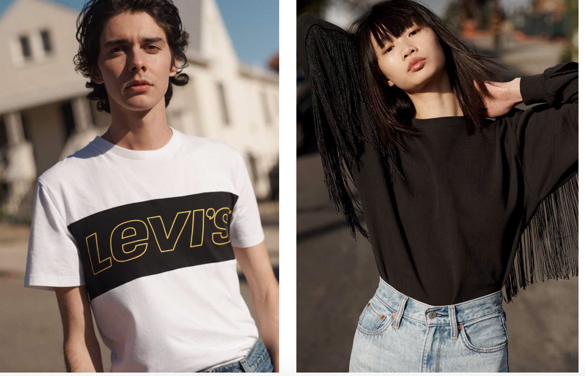
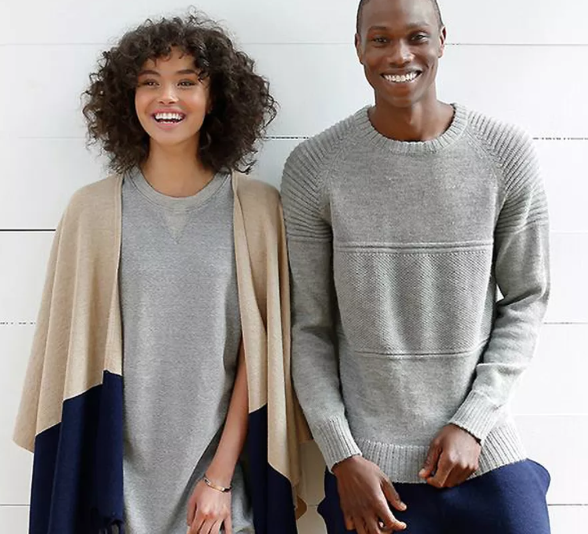
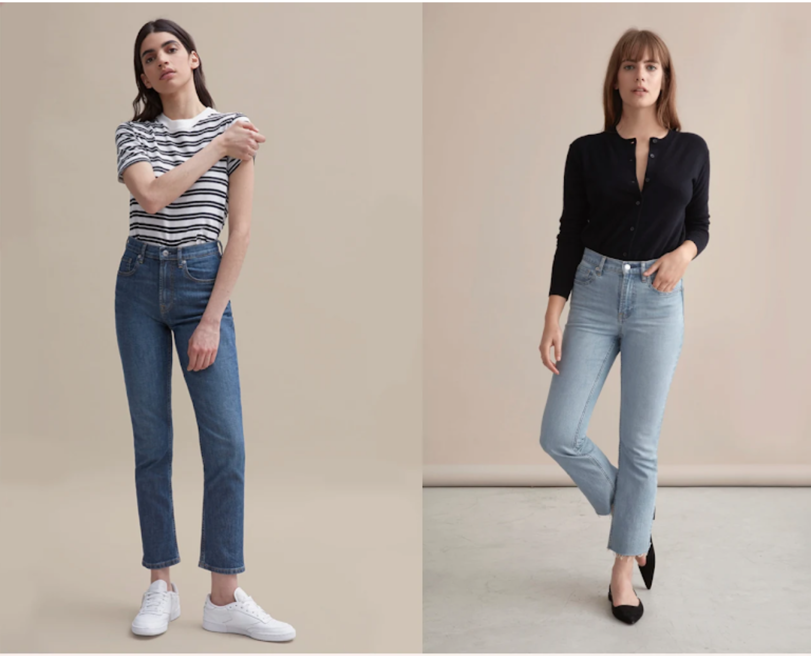
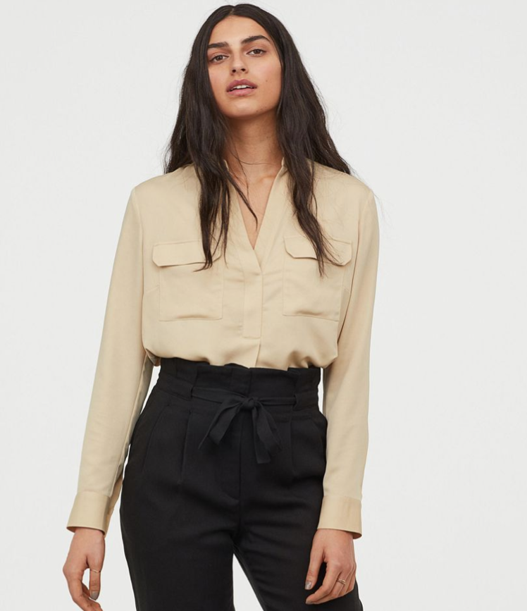

Here are a couple of clothing brands that are ethical.
| Brands Logos | More about the brands |
|---|---|
|  Levi's | Levi’s is trying to make the same pair of jeans that everyone loves but using less H2O. Levi’s has used about 20 techniques to conserve water and want to inspire other companies. As of now, about 67% of all Levi’s products are made with waterless techniques. Levi’s is making an effort to help the people that make their clothing. They help their workers by connecting them with non-profits. |
|  Alternative Apparel | The clothes from this company are certified organic. The company is as well Fair Trade Certified meaning that the company keeps in mind the ethical factors such as working conditions. Clothing for the whole family.
|
| Pact | The clothes from this company are certified organic. The company is as well Fair Trade Certified meaning that the company keeps in mind the ethical factors such as working conditions. Clothing for the whole family.
|
|  Everlane | The brand is all about the ethics and transparency of the factories. They make sure that every factory receives fair wages and as well giving every factory a compliance audit.
|
|  H&M Conscious Collection | Each item from the conscious collection that is sustainable clothing and is organic. H&M also allows its consumers to recycle unwanted clothing for a discount.
|
 Patagonia
Patagonia
|
Clothing from Patagonia are Fair Trade Certified. Patagonia has more Fair trade Certified styles than any other brand. As well they offer a Fair Trade premium which allows their workers to build schools, daycare or scholarships.
|
| Columbia | The brand ‘s half vendors are Bluesign certified meaning that they are efficient with water and follow safety requirements. Each factory producing from Columbia is required to have a list of rights for the workers. |